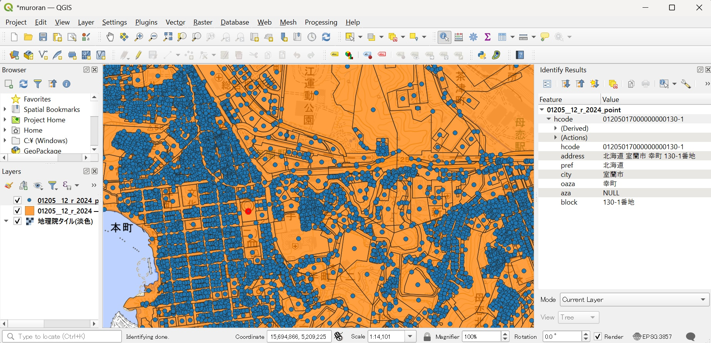
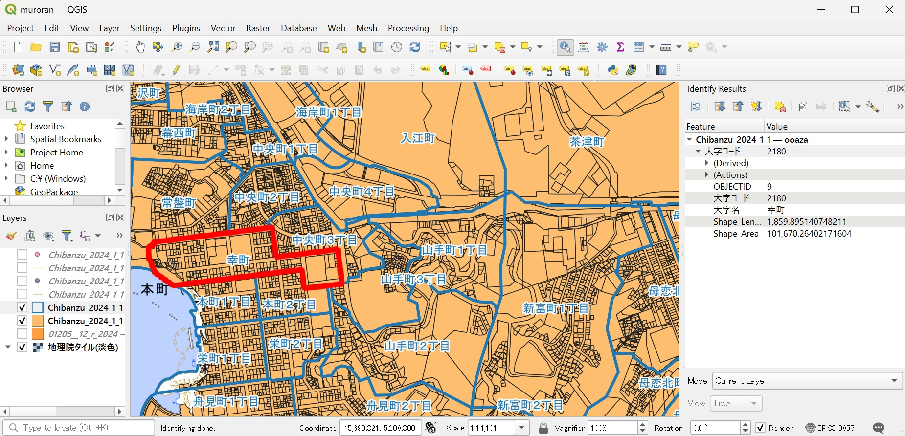
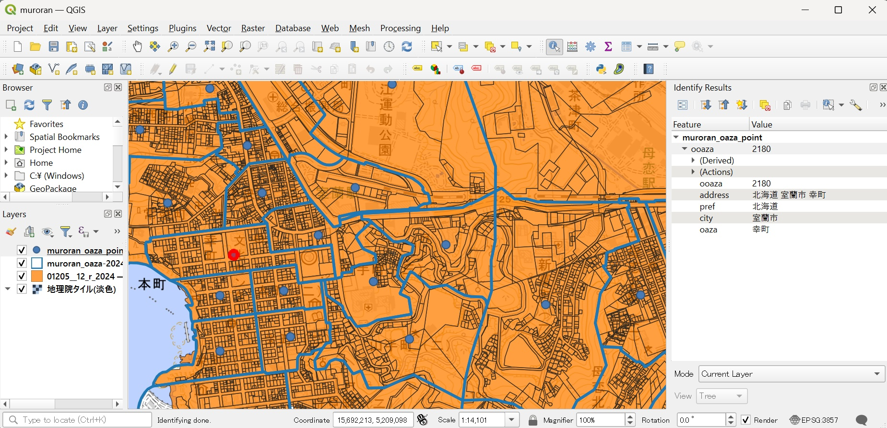

Jageocoder-dbtool (本ソフト) は、地図データから Jageocoder 用の住所データベースを作成するソフトウェアです。
一般的な住所を解析したり、対応する経緯度を取得したい場合は、本ソフトを利用して住所データベースを作る必要はありません。すでに作成済みの住所データベースを Jageocoder データファイル一覧 で配布しているので、そちらからダウンロードしてください。
配布しているデータファイルは国の機関が公開しているオープンデータから作成しているため、市販されている地図データに比べると精度が低かったり、網羅範囲が狭いことがあります。有償の地図データをお持ちであったり、独自に調査して作成した地図データがあり、その地図に対応する住所データベースを作りたい場合に本ソフトを利用してください。
本ソフトを実行するには、 Python 3.10, 3.11, 3.12 が動作する環境が必要です。 3.13 以降では現時点では動作しません。
Windows 上のコマンドプロンプト、各種 Linux、 MacOS X で動作確認しています。
本ソフトでは、 GeoJSON 形式の地図データから、 Jageocoder 用の住所データベースを作成します。利用したい地図データが GeoJSON 形式ではない場合、お手数ですが QGIS などの GIS ソフトウェアを利用して地図データを読み込み、 GeoJSON 形式でエクスポートしてください。
GeoJSON データにもいろいろな種類がありますが、本ソフトが対応しているのは「 Point, Polygon, Multipolygon をジオメトリに持つ Feature のリスト」 (1行に1オブジェクトを含む JSONL フォーマットのファイル) または「Point, Polygon, Multipolygon をジオメトリに持つ FeatureCollection」です。 LineString をジオメトリに持つデータ (たとえば道路データなど) は利用できません。
GeoJSON データの座標参照系は WGS84 (RFC7946) 、文字エンコーディングは UTF-8 (RFC8259) である必要があります。利用したい地図データが異なる座標参照系や文字エンコーディングを利用している場合は、 GIS ソフトウェア等を利用して変換してください。
Python 3.x のインストール手順と仮想環境の作成方法が分からない場合は、環境に合わせて別紙を参照してください。本ソフトが動作する Python のバージョンは 3.10, 3.11, 3.12 です。
本ソフトは Python の公式ソフトウェアリポジトリである PyPI からダウンロード、インストールします。仮想環境を有効化した状態で次のコマンドを実行してください。
(.venv) pip install jageocoder-dbtool
インストールに成功すると "dbtool" コマンドが実行できるようになります。実行すると簡単なヘルプが表示されます。
インストールするパッケージ名は "jageocoder-(ハイフン)dbtool" 、実行するコマンドは "dbtool" です。
(.venv) dbtool
Usage:
dbtool ( -h | --help )
dbtool ( -v | --version )
dbtool check [-d] [--output=<file>] [--codekey=<codekey>] [--code=<attrs>] [--pref=<attrs>] [--county=<attrs>] [--city=<attrs>] [--ward=<attrs>] [--oaza=<attrs>] [--aza=<attrs>] [--block=<attrs>] [--bld=<attrs>] <geojsonfile>...
dbtool geojson2db [-d] [--text-dir=<dir>] [--db-dir=<dir>] [--id=<id>] [--title=<title>] [--url=<url>] [--codekey=<codekey>] [--code=<attrs>] [--pref=<attrs>] [--county=<attrs>] [--city=<attrs>] [--ward=<attrs>] [--oaza=<attrs>] [--aza=<attrs>] [--block=<attrs>] [--bld=<attrs>] <geojsonfile>...
dbtool geojson2text [-d] --text-dir=<dir> [--id=<id>] [--title=<title>] [--url=<url>] [--codekey=<codekey>] [--code=<attrs>] [--pref=<attrs>] [--county=<attrs>] [--city=<attrs>] [--ward=<attrs>] [--oaza=<attrs>] [--aza=<attrs>] [--block=<attrs>] [--bld=<attrs>] <geojsonfile>...
dbtool text2db [-d] [--db-dir=<dir>] (--text-dir=<dir>|<textfile>...)
本ソフトをもう利用しない場合は、仮想環境を無効化してから ".venv" ディレクトリごと削除してください。
Linux, MacOSX の場合は "rm -r" でディレクトリ以下を削除します。
(.venv) deactivate
rm -r .venv
Windows cmd.com の場合は "rmdir /S" でディレクトリを中身ごと削除します。
(.venv) deactivate
> rmdir /S .venv
本ソフトで利用できる機能とコマンドは次の通りです。
"dbtool geojson2db ..."
GeoJSON 形式の地図データから、 Jageocoder 住所データベースを作成します。
"dbtool check ..."
GeoJSON を住所データに変換する際のパラメータおよび変換結果を確認します。代表点の座標をジオメトリとする Point 形式の GeoJSON (JSONL) ファイルを出力します。詳細は「具体例」を参照してください。
"dbtool geojson2text ..."
GeoJSON 形式の地図データから、 Jageocoder 住所データベース用のテキスト形式データを作成します。「テキスト形式データ」はデータベースダンプに相当するもので、そのままでは Jageocoder で利用できませんが、テキスト形式データがあれば住所データベースを作ることができます。
"dbtool text2db ..."
テキスト形式データから住所データベースを作成します。複数のテキスト形式データをまとめて住所データベースに変換すると、統合検索が可能な住所データベースを作ることができます。
"geojson2db"・"check"・"geojson2text" コマンドでは、GeoJSON 地図データに含まれる属性を都道府県や市区町村といった住所の要素に割り当てる必要があります。ここではこれらのコマンドで共通の、住所レベルの割り当てに利用するオプションについて説明します。
Jageocoder は住所を以下のレベルに分けて管理します。
たとえば北海道のえりも町役場の住所「北海道幌泉郡えりも町字本町206番地」は、 Jageocoder では
{"pref":"北海道", "county":"幌泉郡", "city":"えりも町", "oaza":"字本町", "block":"206番地"}
と分割し、宮城県仙台市の青葉区役所の住所「宮城県仙台市青葉区国分町3丁目7番1号」は
{"pref":"宮城県", "city":"仙台市", "ward":"青葉区", "oaza":"国分町", "aza":"3丁目", "block":"7番", "bld":"1号"}
と分割します。
住所をどのように分割するか、レベルごとの名称をどうするかについては決まったルールがないため、地図データによっていろいろな書き方があります。そこで本ソフトでは、オプションパラメータを使って「地図データのどの属性が Jageocoder のどの住所レベルに該当するか」を指定する必要があります。
オプションパラメータ名は上のレベル分けに記載した "pref", "county" などの前に "--" を付け、"パラメータ名=属性名" という形式で指定してください。たとえば地図データの「丁目」属性を Aza レベルに割り当てたければ、 "--aza=丁目" のようになります。
地図データに該当する属性が存在しない場合はオプションごと省略できます。たとえば千代田区だけを対象とした地図データであれば county や ward に該当する属性が存在しないでしょう。その場合は "--county" や "--ward" は不要です。都道府県や市町村に該当する属性も省略されていて存在しないかもしれませんが、"--pref" や "--city" を省略してしまうと「東京都千代田区…」から書かれた住所を解析できなくなってしまいます。このような場合には "--pref==東京都 --city==千代田区" のようにイコールを2つ並べて固定値を指定してください。
地図データに該当する属性が存在するけれど接尾辞が省略されている場合もあります。たとえば "chome"という属性があり、そこに "1" という数字だけが記録されている場合、住所の要素としては "1丁目"として登録する必要があります。このように属性の値に文字列を付け加えたいような場合には、"{}" で属性名を囲むことでその属性の値に置き換えられます。 "chome" 属性の値の後ろに「丁目」という文字列を追加して aza レベルに割り当てたい場合は、 "--aza={chome}丁目" と指定します。
なお、アパート・マンション名など、 bld よりも詳細な住所レベルには対応していません。
ここではオープンデータを利用して実際に住所データベースを作成する手順を説明します。
サンプルとして、G空間情報センターより「法務省登記所備付地図データ変換済」の北海道室蘭市のデータを利用します (データダウンロードには無償のユーザ登録が必要です)。 https://www.geospatial.jp/ckan/dataset/aigid-moj-01205 を開き、 "01205_室蘭市_公共座標12系_筆R_2024.geojson" リンクからダウンロードに進んでください。 "01205__12_r_2024.geojson" という GeoJSON 形式のファイルがダウンロードできます。
このファイルを QGIS で開き、室蘭市役所付近のポリゴンをクリックすると、次のような属性を持っていることが分かります。
この地図データから、「室蘭市幸町130-1」を「北海道 / 室蘭市 / 幸町/ 130-1番地」と解析し、ポリゴンの中心付近の経緯度を返すことができる住所データベースを作ります。
ダウンロードした GeoJSON ファイルを利用しやすくするため、本ソフトをインストールしたディレクトリにコピーしてください。
コピーせずに、 GeoJSON ファイルを指定している部分をファイルへのパスに置き換えても動作します。
Jageocoder は座標を経緯度で管理するため、地図データがポリゴンで提供されている場合、ポリゴン内の１点を代表点として算出してその座標をデータベースに登録します。また、住所を解析した結果からポリゴンを逆引きするには、地図データ中でポリゴンを一意に識別できるコードを登録しておく必要があります。
代表点の位置と識別コード、および元の地図データの属性が住所レベルに正しく割り当てられているかを確認するため、 "dbtool check" コマンドを実行します。
dbtool check --code=ID --pref==北海道 --city=市区町村名 --oaza=大字名 --aza=丁目名 --block={地番}番地 01205__12_r_2024.geojson --output=01205__12_r_2024_point.geojsonl
オプションの意味は次の通りです。
この例では County・Ward・Bld レベルには何も割り当てられていないため、常に空欄になります。 実行すると "01205__12_r_2024_point.geojsonl" という JSONL 形式のファイルが作成されます。 QGIS で開くと図のように代表点の位置と住所の割り当てを確認することができます。
また、 "hcode" という属性に GeoJSON の "ID" の値が識別コードとして入っていることも確認できます。
この属性名を変更したい場合は、 "--codekey=muroran" のように指定してください。省略すると "hcode" になります。
代表点の位置や、地図データの属性が住所レベルに正しく割り当てられていることを確認したら、住所データベースを作成します。
"check" の代わりに "geojson2db" を指定します。また、 "--output" は確認用 GeoJSON ファイル名を指定するオプションなので、 "geojson2db" では指定できません。削除してください。
dbtool geojson2db --code=ID --pref==北海道 --city=市区町村名 --oaza=大字名 --aza=丁目名 --block={地番}番地 01205__12_r_2024.geojson
このコマンドを実行すると、 "db" ディレクトリに住所データベースが作成されます。住所データベースは複数のファイルを含むファイルツリーで、 "db" ディレクトリが住所データベースそのものです。この住所データベースを利用して、実際に室蘭市の住所が解析できることを確認します。
jageocoder search --db-dir=db 室蘭市幸町130-1
{"matched": "室蘭市幸町130-1", "candidates": [{"id": 19381, "name": "130-1番地", "x": 140.9738006591797, "y": 42.31498336791992, "level": 7, "priority": 99, "note": "hcode:H000000072", "fullname": ["北海道", "室蘭市", "幸町", "130-1番地"]}]}
"fullname" の値が期待した通り「北海道 / 室蘭市 / 幸町/ 130-1番地」になっています。また、"x"・"y" に代表点の座標が、 "note" に "hcode:H000000072" という形式でポリゴンの識別コードが格納されています。
"db" ディレクトリの名前を変更したり移動しても住所データベースとして機能しますが、最初から出力するディレクトリ名を指定したければ "--db-dir=murorandb" のようにオプションを追加してください。
リバースジオコーディング (経緯度から住所を検索) もできます。
最初にリバースジオコーディングを実行する時は RTree を作成するため少し時間がかかります。
jageocoder reverse --db-dir=db --level=8 140.97380 42.31498
[{"candidate": {"id": 19381, "name": "130-1番地", "x": 140.9738006591797, "y": 42.31498336791992, "level": 7, "priority": 99, "note": "hcode:H000000072", "fullname": ["北海道", "室蘭市", "幸町", "130-1番地"]}, "dist": 0.3780329387571648}, {"candidate": {"id": 23185, "name": "2-14番地", "x": 140.9730987548828, "y": 42.314605712890625, "level": 7, "priority": 99, "note": "hcode:H000001791", "fullname": ["北海道", "室蘭市", "本町", "２丁目", "2-14番地"]}, "dist": 71.20881235331073}, {"candidate": {"id": 19400, "name": "202番地", "x": 140.97422790527344, "y": 42.31449508666992, "level": 7, "priority": 99, "note": "hcode:H000000053", "fullname": ["北海道", "室蘭市", "幸町", "202番地"]}, "dist": 64.38778831053295}]
指定した座標 (lon:140.97380, lat:42.31498) に最寄りの住所として ["北海道", "室蘭市", "幸町", "130-1番地"] が検索できています。
複数の地図データを利用して、より高度な住所データベースを作成する方法を説明します。
住所データベースを作成する時に、複数の地図データを組み合わせて利用したいことがあります。たとえば室蘭市が公開している 室蘭市地番図2024年 には大字の境界を表す "ooaza" レイヤが含まれています。
登記所備付地図から作成したデータにこの大字境界ポリゴンから作成したデータを追加することで、大字レベルの住所をより正確に解析することができるようになります。
jageocoder search --db-dir=db 室蘭市幸町
{"matched": "室蘭市幸町", "candidates": [{"id": 19281, "name": "幸町", "x": 140.97177124023438, "y": 42.316184997558594, "level": 5, "priority": 99, "note": "", "fullname": ["北海道", "室蘭市", "幸町"]}]}
この「幸町」の座標は、幸町に含まれる Block レベルのデータのうち文字コード順で最も小さい「室蘭市幸町1-1」から作成しています。検索してみると「室蘭市幸町1-1」の座標と完全に一致していることが分かります。
jageocoder search --db-dir=db 室蘭市幸町1-1
{"matched": "室蘭市幸町1-1", "candidates": [{"id": 19282, "name": "1-1番地", "x": 140.97177124023438, "y": 42.316184997558594, "level": 7, "priority": 99, "note": "hcode:H000002407", "fullname": ["北海道", "室蘭市", "幸町", "1-1番地"]}]}
この座標は大字の中心付近ではなく、端の方にあり、代表点として適切ではありません。大字境界ポリゴンから代表点を作成することでポリゴンの中央付近の座標を返すことができるようになります。
室蘭市地番図の "ooaza" レイヤを GeoJSON 形式でエクスポートして "muroran_oaza-2024.geojson" というファイルに保存します。 QGIS で開くと「幸町」のポリゴンは次のような属性を持っています。
この GeoJSON の属性を住所レベルに割りあて、代表点座標を計算します。識別コードには「大字コード」を利用し、 codekey として登記所備付地図と重複しないように ooaza を指定します。
dbtool check --codekey=ooaza --code=大字コード --pref==北海道 --city==室蘭市 --oaza=大字名 muroran_oaza-2024.geojson --output=muroran_oaza_point.geojsonl
作成した "muroran_oaza_point.geojsonl" を確認すると、代表点は大字ポリゴンの中心にあり、 "ooaza" に大字コードの 2180 が登録されています。
2つの地図データから住所データベースを作る準備ができましたが、登記所備付地図と室蘭市地番図の大字境界レイヤでは属性の構成が異なるため、 "dbtool convert" コマンドで一度に住所データベースに変換することはできません。たとえば City レベルの住所は、登記所備付地図では "--city=市区町村名" と指定する必要がありますが、室蘭市地番図では "--city==室蘭市" と指定する必要があるからです。
このように構造が異なる複数の地図データから住所データベースを作成したい場合は、 "dbtool geojson2text" コマンドを利用してそれぞれの地図から「テキスト形式データ」を作成します。
(登記所備付地図からテキスト形式データを作成)
dbtool geojson2text --codekey=chiban --code=ID --pref==北海道 --city=市区町村名 --oaza=大字名 --aza=丁目名 --block={地番}番地 01205__12_r_2024.geojson
(室蘭市地番図大字境界レイヤからテキスト形式データを作成)
dbtool geojson2text --codekey=ooaza --code=大字コード --pref==北海道 --city==室蘭市 --oaza=大字名 muroran_oaza-2024.geojson
"geojson2text" のオプションは "geojson2db" とほぼ同じですが、データベースディレクトリは指定できません。テキスト形式データを出力するディレクトリは "--text-dir" で指定でき、省略した場合は dbtool コマンドを実行したディレクトリ下の "texts" になります。
作成したテキスト形式データを "dbtool text2db" コマンドで1つの住所データベースにまとめます。 "texts" ディレクトリ内にある全てのテキスト形式データを利用して住所データベースを作るには、次のコマンドを実行します。
dbtool text2db --text-dir=texts
ディレクトリではなくファイル名を "dbtool text2db texts/01205__12_r_2024.txt.bz2 texts/muroran_oaza-2024.txt.bz2" のように指定すると、そのファイルだけ利用して住所データベースを作成できます。
これで "db" に住所データベースが作成されました。この住所データベースを利用して大字レベルの住所と地番レベルの住所を検索してみます。
jageocoder search --db-dir=db 室蘭市幸町
{"matched": "室蘭市幸町", "candidates": [{"id": 19317, "name": "幸町", "x": 140.97024536132812, "y": 42.3152961730957, "level": 5, "priority": 99, "note": "ooaza:2180", "fullname": ["北海道", "室蘭市", "幸町"]}]}
jageocoder search --db-dir=db 室蘭市幸町1-1
{"matched": "室蘭市幸町1-1", "candidates": [{"id": 19318, "name": "1-1番地", "x": 140.97177124023438, "y": 42.316184997558594, "level": 7, "priority": 99, "note": "chiban:H000002407", "fullname": ["北海道", "室蘭市", "幸町", "1-1番地"]}]}
大字レベルの住所を検索すると "note" 欄に "ooaza:2180" のように大字コードが、地番レベルの住所を検索すると "chiban:H000002407" のように FID がそれぞれ登録されています。大字の代表点の座標も大字ポリゴンから計算したものが利用されています。
"geojson2db" と "geojson2text" にはまだ説明していないオプションがあります。 "--id"・"--title"・"--url" の3つで、いずれも Jageocoder のデータセット (Dataset) に関係します。
Jageocoder ではたとえば国交省の 位置参照情報 や、デジタル庁の アドレス・ベース・レジストリ など、住所データベースの元となるデータ集合を「データセット」と呼びます。位置参照情報データセットには「街区レベル位置参照情報」と「大字・町丁目レベル位置参照情報」が含まれるようにデータセット内のデータが同じ構造を持っている必要はありません。同一の出典とみなせるデータをひとまとめに管理するための集合がデータセットです。
日本の住所は漢字の表記揺れや字・小字の省略などが頻繁に起こるため、同じ住所でも出典によって表記が異なることもよくあります。なので検索結果が「どの情報に由来するのか」を確認できる必要があります。上の例でいえば、大字レベルの住所は「室蘭市地番図」由来であり、地番レベルの住所は「登記所備付地図」由来です。なのでこれらは別々のデータセットとして管理するべきです。
データセットを分けるには "--id" オプションで異なる値を指定します。ただし "id" として指定できるのは1以上99以下の整数に限ります。また、数値だけでは出典が分からなくなってしまうので、 "--title" オプションでデータセットのタイトルを、 "--url" オプションでデータセットに関連するウェブページの URL を登録することができます。
具体的な使い方は次のようになります。
dbtool geojson2text --id=1 --title=登記所備付地図 --codekey=chiban --code=ID --pref==北海道 --city=市区町村名 --oaza=大字名 --aza=丁目名 --block={地番}番地 01205__12_r_2024.geojson
dbtool geojson2text --id=2 --title=室蘭市地番図 --codekey=ooaza --code=大字コード --pref==北海道 --city==室蘭市 --oaza=大字名 muroran_oaza-2024.geojson
dbtool text2db --text-dir=texts
これで登記所備付地図由来の住所は "id:1" に、室蘭市地番図由来の住所は "id:2" になります。作成した住所データベースで住所を検索してみます。
jageocoder search --db-dir=db 室蘭市幸町
{"matched": "室蘭市幸町", "candidates": [{"id": 19317, "name": "幸町", "x": 140.97024536132812, "y": 42.3152961730957, "level": 5, "priority": 2, "note": "ooaza:2180", "fullname": ["北海道", "室蘭市", "幸町"]}]}
jageocoder search --db-dir=db 室蘭市幸町1-1
{"matched": "室蘭市幸町1-1", "candidates": [{"id": 19318, "name": "1-1番地", "x": 140.97177124023438, "y": 42.316184997558594, "level": 7, "priority": 1, "note": "chiban:H000002407", "fullname": ["北海道", "室蘭市", "幸町", "1-1番地"]}]}
先ほどとほとんど同じですが、 "priority" に設定した "id" の値が入っていることが確認できます。
検索結果の属性名が "dataset-id" ではなく "priority" なのは、複数のデータセットが同じ住所を含んでいる場合にどのデータセットを優先するかを決めるためにも利用しているためです。"id" が小さいデータセットの住所が優先されます。
"--title"・"--url" で指定した値は検索結果には表示されませんが、住所データベースには登録されており、Python API で確認できます。
$ python
>>> import jageocoder
>>> jageocoder.init(db_dir="db")
>>> jageocoder.searchNode("幸町130-1")[0].node.dataset
{'id': 1, 'title': '登記所備付地図', 'url': ''}
>>> jageocoder.searchNode("幸町")[0].node.dataset
{'id': 2, 'title': '室蘭市地番図', 'url': ''}
初版: 2025-05-01